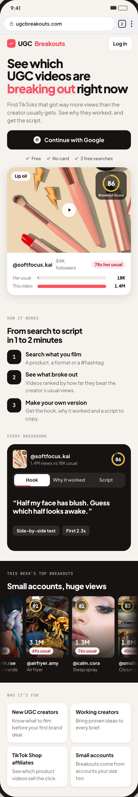
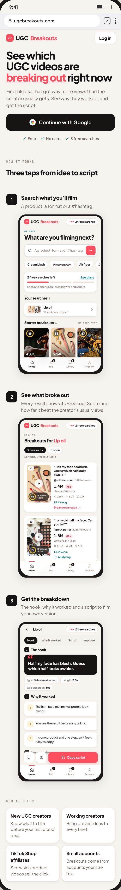
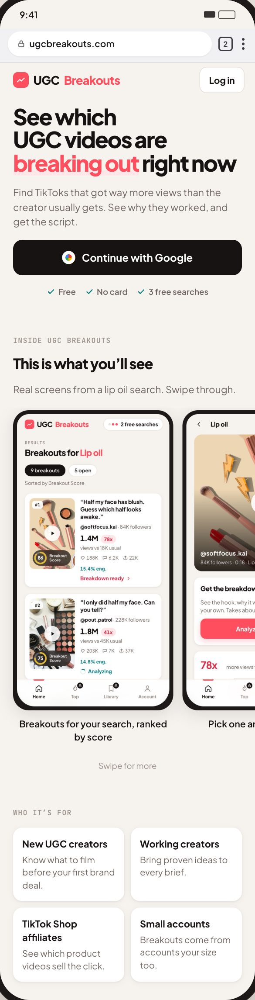
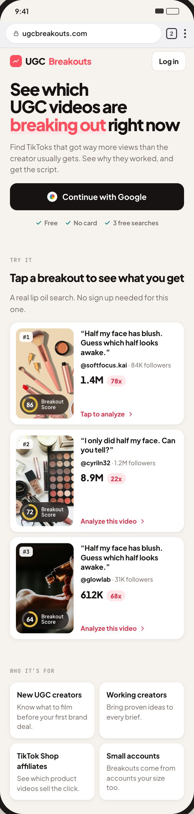

The headline and everything from “Who it’s for” down stay as they are. Each option replaces the part in between, and every screen in A to D is a real capture from the UB 3.1 prototype, so it matches the app.
NowThe current middle: a drawn hero card, how it works, a dark breakdown box and a top-breakouts band. Ivan: these don’t match the app.

A · WalkthroughThree steps, each with a real screen from the app: search, results, the breakdown.Try it in the prototype

B · Swipe the appSix real screens in order, in a row she can swipe: results, Analyze, analyzing, hook, script, next search.Try it in the prototype

C · Try itA live demo built from the app’s own parts. Tap a result, it analyzes for a few seconds, then shows the breakdown. No sign up needed.Try it in the prototype

D · ProofOne real breakout as a story (18K usual to 1.4M), what you get with real screens, then a creator reviews row (samples for now).Try it in the prototype